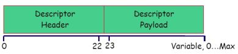
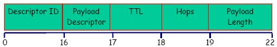
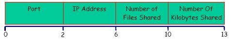
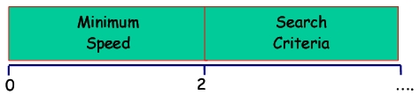
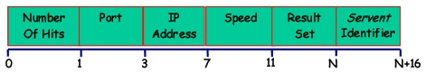
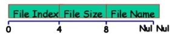
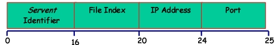
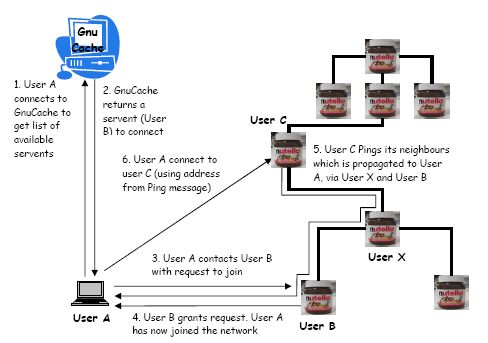

Torna alla pagina di Sistemi per l'elaborazione delle informazioni
:: Sistemi - Gnutella ::
Cos'è Gnutella
Gnutella è un protocollo per la ricerca distribuita che utilizza un modello decentralizzato (quindi ogni utente è responsabile della violazione dei copyright del proprio materiale condiviso) nel quale ogni nodo è sia client che server e viene chiamato Gnutella servent.
Questi servents forniscono interfacce tramite le quali gli utenti possono eseguire query e vedere i risultati della ricerca; contemporaneamente possono anche accettare query da altri servents, controllare le corrispondenze tra i propri dati e rispondere.
Per comunicare tra di loro i servents utilizzano TCP/IP sulla porta 6346.
Descrizione del protocollo
Il protocollo Gnutella descrive il modo in cui i vari servents comunicano tra di loro nella rete. Questi inviano e ricevono dei Gnutella Descriptors, formati da un Header e da un Payload.

Gnutella Descriptors
I Gnutella Descriptors vengono inviati e ricevuti dai servents una volta che questi sono collegati alla rete
- Ping: usato per scoprire gli hosts sulla rete. Un servent che riceve un Ping Descriptor dovrebbe rispondere con uno o più Pong Descriptors.
- Pong: è la risposta ad un Ping. Contiene l'indirizzo di un servent connesso ed informazioni riguardo alla quantità di dati disponibili nella rete.
- Query: meccanismo per cercare file nella rete. Quando un servent riceve una Query dovrebbe rispondere con una QueryHit se riesce a trovare il file richiesto tra i propri dati.
- QueryHit: è la risposta ad una Query. Questo descrittore fornisce al destinatario abbastanza informazioni per acquisire i dati corrispondenti alla Query
- Push: meccanismo che permette ad un servent dietro firewall di fornire i dati al network
Gnutella Descriptor Header
Ogni descriptor è preceduto da un Descriptor Header con questa struttura:

- Descriptor ID: un identificatore univoco sulla rete per il descrittore (stringa a 16 byte).
- Payload Descriptor: 0x00 = Ping / 0x01 = Pong / 0x40 = Push / 0x80 = Query / 0x81 = QueryHit.
- TTL(Time To Live): numero di volte che il descrittore sarà inoltrato dai servents prima di essere rimosso dalla rete. Il TTL è l'unico modo per accoppare i descrittori sulla rete.
- Hops: numero di volte che il descrittore è stato inoltrato.
- Payload lenght: lunghezza del payload che viene subito dopo l'header. Il prossimo Descriptor Header sarà localizzato esattamente "Payload Lenght bytes" dalla fine di questo header. E' l'unico modo per un servent di trovare l'inizio del prossimo descrittore.
Nota: tutti i campi di questa struttura utilizzano l'ordinamento little-endian.
Gnutella Descriptor Payload
Subito dopo il Descriptor Header si trova il Descriptor Payload, contenente uno dei descriptors(sono quelli visti prima, ma descritti più dettagliatamente):
Ping (0x00)
I descriptors Ping sono di lunghezza zero e sono rappresentati solo dal Payload Descriptor dell'Header (visto sopra) contenente 0x00.
Pong (0x01)
Un descriptor Pong contiene l'indirizzo di un servent attivo (quello che ha inviato il Pong) e la quantità di dati che stà condividendo sul network.
I descriptors Pong sono inviati solo in risposta di un Ping ed è possibile che più Pong siano inviati in risposta ad un singolo Ping.

- Port: la porta sulla quale l'host(che risponde) può accettare connessioni in entrata.
- IP Address: l'indirizzo IP dell'host che risponde(in big-endian).
- Number of Files Shared: numero di files che il servent stà condividendo sul network.
- Number of Kylobytes Shared: numero di Kylobytes che il servent stà condividendo sul network.
Query (0x80)
Il descriptor Query è un formato di ricerca di Gnutella. Viene passato ai vari servents connessi per controllare se hanno il file desiderato.

- Minimu Speed: velocità minima(in kb/s) dei servents che possono rispondere
- Search Criteria: stringa di ricerca. La massima lunghezza è data dal Payload Lenght che si trova nell'header
QueryHit (0x81)
Risposta inviata da un servent se questo trova il file ricercato tra i propri dati quindi il Descriptor QueryHit viene inviato solo in risposta di un Descriptor Query.

- Number of Hits: numero di risultati ottenuti dalla query e contenuti in Result Set
- Port: porta sulla quale l'host accetta connessioni in entrata.
- IP Address: indirizzo IP dell'host che risponde(in big-endian).
- Speed: velocità(kb/s) dell'host che risponde.
- Result Set: un insieme di risposte alla query.
Ogni risposta di questo campo ha la seguente forma:

- File Index: numero, creato dall'host che risponde alla richiesta, usato per identificare univocamente il file richiesto.
- File Size: dimensione in byte del file.
- File Name: nome del file.
- Servent Identifier: stringa da 16 byte che identifica univocamente il servent, che risponde alla query, sul network.
Push (0x40)
Meccanismo che permette ad un servent nascosto dietro ad un firewall di contribuire in un network Gnutella.

- Servent Identifier: stringa(16 byte) che identifica univocamente il servent sul network che stà richiedendo di forzare il file con l'index File Index
- File Index: index che identifica univocamente il file che deve essere forzato dal servent.
- IP Address: indirizzo IP(big-endian) dell'host tramite il quale il file con File Index dovrebbe essere forzato.
- Port: porta tramite la quale il file con index File Index dovrebbe essere forzato.
Connettersi e operare con un network Gnutella
Individuare peers
Ci sono diversi metodi per scoprire i peer quando ci si collega ad un network Gnutella e quando si è già connessi:
- Messaggi PING PONG: annotando gli indirizzi dei peers che hanno inizializzato le query.
- GnuCache: è incluso nel software per unix. Permette agli utenti di collegarsi ad un server permanente e trovare altri utenti sul network Gnutella.
- Fuori dai limiti: Ad esempio utilizzando IRC(Internet Relay Chat) e il Web cercando un host a cui connettersi, altrimenti controllando una paio di pagine web per vedere quali hosts sono disponibili.
Un utente compie i seguenti passi per unirsi e diventare un partecipante attivo in un network Gnutella:
- L'utente A si unisce al network Gnutella tramite una delle 3 tecniche viste sopra
- Utilizzando la GnuCache quest'ultima ritorna un elenco di nodi del network. L'utente A sceglie uno di questi e cerca di contattarlo.
- L'utente A invia un Gnutella Connectnota1 all'utente B per richiedere di unirsi al network.
- L'utente B accetta e risponde con un Gnutella OKnota2 all'utente A. L'utente A in questo momento è collegato al network.
- I peers in Gnutella inviano periodicamente il messaggio Ping (contenente l'indirizzo di chi lo invia) ai loro vicini, per scoprire gli hosts sul network. I messaggi Ping vengono inviati anche agli altri servents connessi.
- In questo modo l'utente A scopre dell'esistenza dell'utente C perché il Ping dell'utente C è arrivato fino ad A.
nota1 è una stringa(ASCII) formata da: GNUTELLA CONNECT/<protocol version string>\n\n
nota2 il servent che risponde invia la stringa: GNUTELLA OK\n\n
Esempio di connessione:

Cercare file all'interno di una rete Gnutella
Per localizzare un file, un servent invia una query di richiesta a tutti i suoi vicini, che a loro volta invieranno a tutti i loro vicini. Quando un servent riceve una query di richiesta controlla tra i propri dati se c'è qualche file corrispondente e risponde con una query contenente tutte le corrispondenze che ha trovato. Le query di risposta seguono lo stesso percorso fatto dalle query di richiesta così da poter risalire al servent che ha fatto la richiesta iniziale.
Per evitare che le query di richiesta e risposta intasino la rete, ognuna contiene un campo TTL(time to live) che è disolito inizializzato a 7. Quando un servent riceve una query con un TTL positivo, lo decrementa di uno prima di inviare la query ai propri vicini. Quando si riceve una query con un TTL=1, questa non viene ulteriormente inviata ai vicini.
Ogni query è identificata da un identificatore univoco (MUID) per evitare che ogni nodo non risponda alla stessa query più di una volta. Quando un servent riceve una query a cui ha già risposto la salta.
File Download
Una volta che il servent(quello che ha inviato il Ping) ha ricevuto i risultati della Query, può selezionare il file da scaricare.
Il download viene eseguito tramite un messaggio HTTP GET con questa forma:
GET /get/<File Index>/<File Name>/HTTP/1.0 \r\n
Connection: Keep-Alive \r\n
Range: bytes=0- \r\n
User-Agent: Gnutella \r\n
\r\n
mentre la risposta corrispondente del servent(che ha inviato il Pong) sarà un messaggio HTTP OK (seguito dal file) con questa forma:
HTTP 200 OK\r\n
Server: Gnutella \r\n
Content-type: application/binary \r\n
\r\n
Il protocollo Gnutella fornisce supporto per il parametro HTTP Range, quindi i downloads interrotti possono essere ripresi da dove erano arrivati.
Tutto il traffico Gnutella passa attraverso la rete Gnutella, ma il traffico di dati passa attraverso una connessione TCP diretta tra il nodo che richiede il file e quello che risponde.
Regole generali
Per mantenere buono il traffico della rete ci sono 5 regole generali da seguire:
- Regola 1: tutti i servents devono memorizzare il Descriptor ID (da 128bit) ogni volta che un messaggio è generato o consegnato
- Regola 2: i Descriptors Pong, QueryHit e Push dovrebbero essere inviati lungo lo stesso percorso da dove sono arrivati rispettivamente i Descriptors Ping, Query e QueryHit. Così solo quei servents che hanno inviato il Descriptor Ping vedranno il Descriptor Pong.
- Regola 3: un servent inoltra i Descriptors Ping e Query che riceve, a tutti i servents direttamente connessi, tranne a quello che glieli ha inviati.
- Regola 4: un servent decrementa il campo TTL e incrementa il campo Hops, prima di inoltrare il Descriptor agli altri servents connessi. Se arriva un Descriptor con campo TTL=0, questo viene scartato.
- Regola 5: se un servent riceve un Descriptor con lo stesso Payload Descriptor e Descriptor ID ricevuti in precedenza lo scarta.
Link
Nota:
Il protocollo Gnutella è open, quindi tutto il materiale presente in questa pagina non è protetto dai copyright.
Questa specifica si riferisce alla versione 0.4.
Torna alla pagina di Sistemi per l'elaborazione delle informazioni